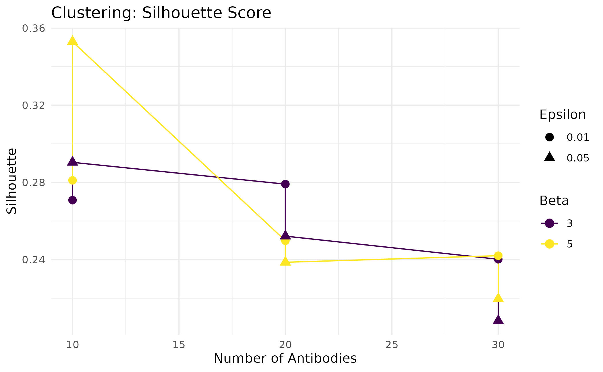
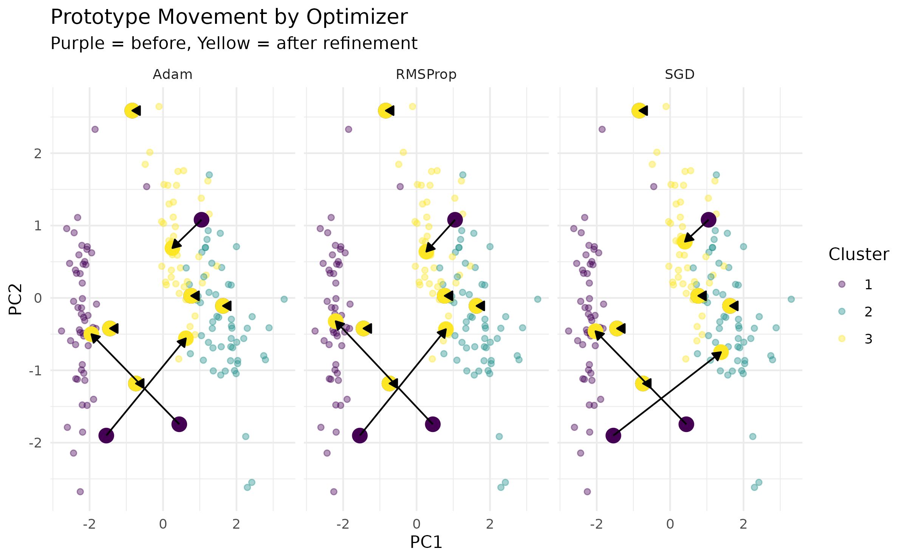
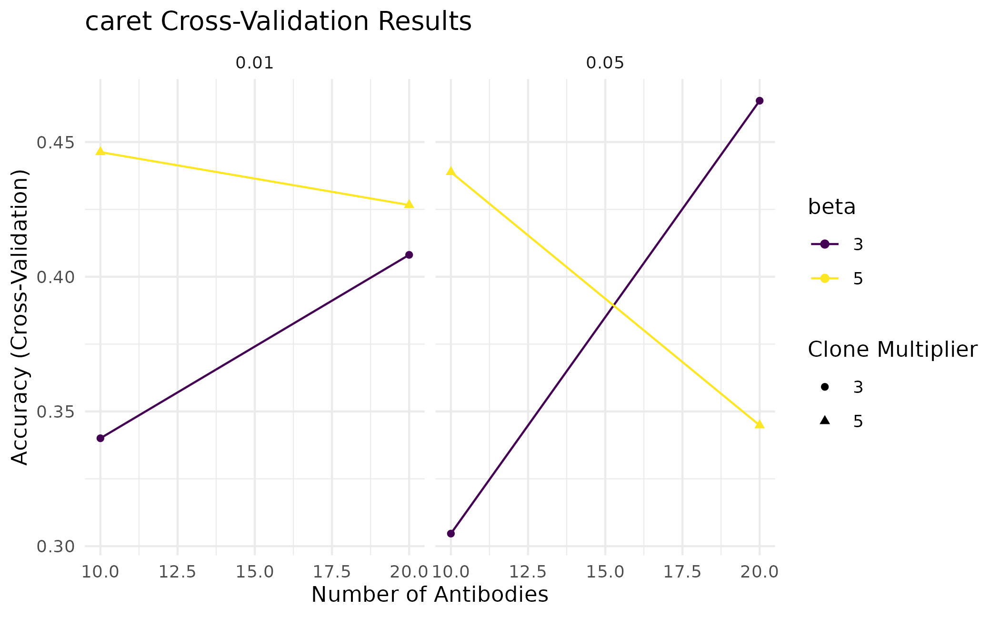
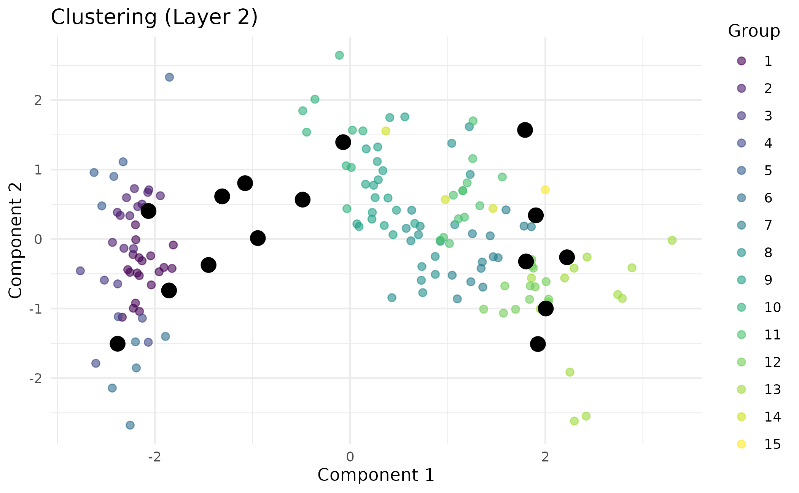
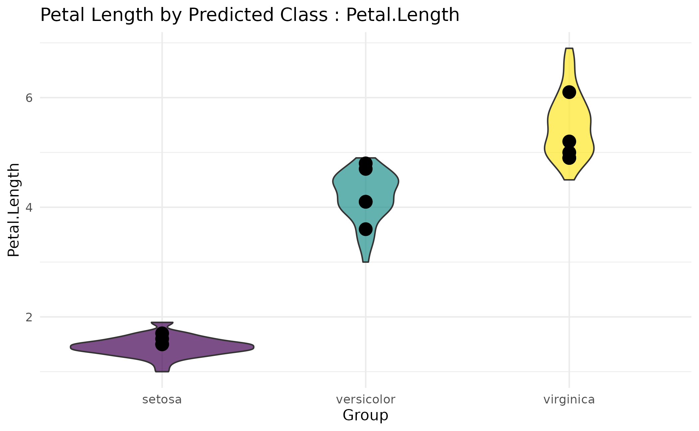

Advanced Tuning & Workflows
Nick Borcherding
Washington University in St. Louis, School of Medicine, St. Louis, MO, USAncborch@gmail.com
2026-06-26
Source:vignettes/articles/advanced-workflows.Rmd
advanced-workflows.RmdIntroduction
This vignette covers advanced usage patterns for bHIVE:
- Hyperparameter tuning with
swarmbHIVE()across tasks - Multilayer hierarchical refinement with
honeycombHIVE() - Gradient-based prototype refinement with
refineB() - Integration with the
caretframework - Visualization with
visualizeHIVE()
Hyperparameter Tuning with swarmbHIVE
swarmbHIVE() performs grid search over bHIVE
hyperparameters and evaluates each combination using a task-specific
metric.
Available Metrics
| Task | Metrics | Direction |
|---|---|---|
| Clustering |
"silhouette",
"davies_bouldin", "calinski_harabasz"
|
Higher is better (except D-B) |
| Classification |
"accuracy",
"balanced_accuracy", "f1",
"kappa"
|
Higher is better |
Clustering Tuning
data(iris)
X <- as.matrix(iris[, 1:4])
grid <- expand.grid(
nAntibodies = c(10, 20, 30),
beta = c(3, 5),
epsilon = c(0.01, 0.05)
)
set.seed(42)
tuning <- swarmbHIVE(X = X, task = "clustering", grid = grid,
metric = "silhouette", maxIter = 15, verbose = FALSE)
ggplot(tuning$results, aes(x = nAntibodies, y = metric_value,
color = factor(beta))) +
geom_line() +
geom_point(aes(shape = factor(epsilon)), size = 3) +
labs(title = "Clustering: Silhouette Score",
x = "Number of Antibodies", y = "Silhouette",
color = "Beta", shape = "Epsilon") +
scale_color_viridis(discrete = TRUE) +
theme_minimal()
tuning$best_params## nAntibodies beta epsilon metric_value
## 10 10 5 0.05 0.3529172Classification Tuning
y <- iris$Species
grid_cls <- expand.grid(
nAntibodies = c(15, 30, 50),
beta = c(3, 5, 10),
epsilon = c(0.01, 0.05)
)
set.seed(42)
tuning_cls <- swarmbHIVE(X = X, y = y, task = "classification",
grid = grid_cls, metric = "accuracy",
maxIter = 15, verbose = FALSE)
tuning_cls$best_params## nAntibodies beta epsilon metric_value
## 11 30 3 0.05 0.9733333Parallelization with BiocParallel
swarmbHIVE() accepts a BPPARAM argument for
parallel execution. This is especially useful when the grid is
large:
library(BiocParallel)
# Use 4 cores
tuning <- swarmbHIVE(
X = X, y = y, task = "classification",
grid = grid_cls, metric = "accuracy",
BPPARAM = MulticoreParam(4),
verbose = FALSE
)Multilayer Refinement with honeycombHIVE
honeycombHIVE() runs bHIVE iteratively across multiple
layers. Each layer produces prototypes that become the input for the
next layer, creating a hierarchical compression of the data.
Basic Multilayer Clustering
set.seed(42)
res <- honeycombHIVE(X = X, task = "clustering",
layers = 3, nAntibodies = 30,
beta = 5, epsilon = 0.05,
maxIter = 10, verbose = FALSE)
# Each layer progressively refines cluster structure
layer_info <- sapply(res, function(r) {
c(n_prototypes = nrow(r$antibodies),
n_clusters = length(unique(r$membership)))
})
layer_info## [,1] [,2] [,3]
## n_prototypes 27 15 10
## n_clusters 27 15 10Collapse Methods
The collapseMethod parameter controls how clusters are
summarized into prototypes for the next layer:
| Method | Description |
|---|---|
"centroid" |
Mean of cluster members (default) |
"medoid" |
Actual data point closest to center |
"median" |
Coordinate-wise median |
set.seed(42)
res_centroid <- honeycombHIVE(X = X, task = "clustering", layers = 2,
nAntibodies = 20, collapseMethod = "centroid",
verbose = FALSE)
res_medoid <- honeycombHIVE(X = X, task = "clustering", layers = 2,
nAntibodies = 20, collapseMethod = "medoid",
verbose = FALSE)
cat("Centroid clusters:", length(unique(res_centroid[[2]]$membership)), "\n")## Centroid clusters: 11## Medoid clusters: 13With Gradient Refinement
Setting refine = TRUE applies gradient-based updates via
refineB() after each layer’s bHIVE pass. This fine-tunes
prototype positions before collapsing.
data(iris)
X_iris <- as.matrix(iris[, 1:4])
y_iris <- iris$Species
set.seed(42)
res_plain <- honeycombHIVE(X = X_iris, y = y_iris, task = "classification",
layers = 3, nAntibodies = 30, verbose = FALSE)
res_refined <- honeycombHIVE(X = X_iris, y = y_iris, task = "classification",
layers = 3, nAntibodies = 30,
refine = TRUE, refineOptimizer = "adam",
refineLoss = "categorical_crossentropy",
refineSteps = 5, refineLR = 0.01, verbose = FALSE)
acc_plain <- mean(res_plain[[3]]$predictions == as.character(y_iris))
acc_refined <- mean(res_refined[[3]]$predictions == as.character(y_iris))
cat("Accuracy (plain): ", round(acc_plain, 3), "\n")## Accuracy (plain): 0.333## Accuracy (refined): 0.333Gradient Refinement with refineB
refineB() takes trained antibody positions and
fine-tunes them using gradient-based optimization. It supports 5
optimizers and 8 loss functions.
Optimizers
| Optimizer | Key Parameter | Notes |
|---|---|---|
"sgd" |
lr |
Simple, good baseline |
"momentum" |
momentum_coef |
Accelerates SGD |
"adagrad" |
– | Per-parameter adaptive learning rates |
"adam" |
beta1, beta2
|
Best general-purpose optimizer |
"rmsprop" |
rmsprop_decay |
Good for non-stationary objectives |
Loss Functions
| Loss | Tasks | Description |
|---|---|---|
"mae" |
All | Mean absolute error (sign-based pull/push) |
"categorical_crossentropy" |
Classification | Cross-entropy loss |
"binary_crossentropy" |
Classification | Binary cross-entropy |
"kullback_leibler" |
Classification | KL divergence |
"cosine" |
Classification | Cosine distance loss |
Comparing Optimizers
X <- as.matrix(iris[, 1:4])
y <- iris$Species
set.seed(42)
res <- bHIVE(X, y, task = "classification", nAntibodies = 10,
beta = 5, epsilon = 0.05, initMethod = "random",
k = 4, verbose = FALSE)
Ab <- res$antibodies
colnames(Ab) <- colnames(X)
assignments <- as.integer(factor(res$assignments,
levels = unique(res$assignments)))
pca <- prcomp(X, scale. = TRUE)
X_pca <- pca$x[, 1:2]
A_orig_pca <- predict(pca, Ab)
optimizers <- c("sgd", "adam", "rmsprop")
refined_list <- lapply(optimizers, function(opt) {
Ab_refined <- refineB(A = Ab, X = X, y = y,
assignments = assignments,
task = "classification",
loss = "categorical_crossentropy",
optimizer = opt, steps = 5, lr = 0.01,
verbose = FALSE)
colnames(Ab_refined) <- colnames(X)
A_ref_pca <- predict(pca, Ab_refined)
data.frame(optimizer = opt,
PC1_after = A_ref_pca[, 1],
PC2_after = A_ref_pca[, 2])
})
refined_df <- do.call(rbind, refined_list)
refined_df$ID <- factor(rep(seq_len(nrow(Ab)), times = length(optimizers)))
proto_df <- data.frame(ID = factor(seq_len(nrow(A_orig_pca))),
PC1_before = A_orig_pca[, 1],
PC2_before = A_orig_pca[, 2])
merged <- merge(proto_df, refined_df, by = "ID")
ggplot() +
geom_point(data = data.frame(PC1 = X_pca[, 1], PC2 = X_pca[, 2],
Cluster = factor(assignments)),
aes(x = PC1, y = PC2, color = Cluster), alpha = 0.4) +
geom_point(data = proto_df,
aes(x = PC1_before, y = PC2_before),
color = "#440154", size = 4) +
geom_point(data = merged,
aes(x = PC1_after, y = PC2_after),
color = "#FDE725", size = 4) +
geom_segment(data = merged,
aes(x = PC1_before, y = PC2_before,
xend = PC1_after, yend = PC2_after),
arrow = arrow(length = unit(0.2, "cm"), type = "closed"),
color = "black", linewidth = 0.5) +
scale_color_viridis(discrete = TRUE) +
labs(title = "Prototype Movement by Optimizer",
subtitle = "Purple = before, Yellow = after refinement",
x = "PC1", y = "PC2") +
facet_wrap(~optimizer, nrow = 1,
labeller = as_labeller(c(sgd = "SGD", adam = "Adam",
rmsprop = "RMSProp"))) +
theme_minimal()
caret Integration
bHIVE provides two caret-compatible model objects for use with
train():
-
bHIVEmodel– single-pass bHIVE with tuning overnAntibodies,beta, andepsilon -
honeycombHIVEmodel– multilayer bHIVE with additional tuning overlayers,refineOptimizer,refineSteps, andrefineLR
Basic caret Workflow
library(caret)
data(iris)
X_iris <- as.matrix(iris[, 1:4])
y_iris <- iris$Species
set.seed(42)
idx <- sample(nrow(X_iris), nrow(X_iris) * 0.7)
X_train <- X_iris[idx, ]
X_test <- X_iris[-idx, ]
y_train <- y_iris[idx]
y_test <- y_iris[-idx]
ctrl <- trainControl(method = "cv", number = 3)
model <- train(
x = X_train, y = y_train,
method = bHIVEmodel,
trControl = ctrl,
tuneGrid = expand.grid(
nAntibodies = c(10, 20),
beta = c(3, 5),
epsilon = c(0.01, 0.05)
),
verbose = FALSE
)
ggplot(model) +
labs(title = "caret Cross-Validation Results") +
scale_color_viridis(discrete = TRUE) +
theme_minimal()
Prediction on Held-Out Data
## Actual
## Predicted setosa versicolor virginica
## setosa 0 6 7
## versicolor 2 7 8
## virginica 10 2 3honeycombHIVE caret Model
The multilayer caret model adds layer count and refinement parameters to the tuning grid:
model_hc <- train(
x = X_train, y = y_train,
method = honeycombHIVEmodel,
trControl = trainControl(method = "cv", number = 3),
tuneGrid = expand.grid(
nAntibodies = c(20, 30),
beta = 5,
epsilon = 0.05,
layers = c(2, 3),
refineOptimizer = "adam",
refineSteps = 5,
refineLR = 0.01
),
verbose = FALSE
)Visualization with visualizeHIVE
The visualizeHIVE() function produces publication-ready
ggplot2 figures for bHIVE and honeycombHIVE results.
Plot Types
| Type | Description |
|---|---|
"scatter" |
2D scatter with optional dimensionality reduction (PCA, UMAP, t-SNE) |
"boxplot" |
Feature distributions by group with prototype overlay |
"violin" |
Violin plots with prototype markers |
"density" |
Density curves with prototype reference lines |
Scatter Plot with PCA
X <- as.matrix(iris[, 1:4])
set.seed(42)
res <- honeycombHIVE(X = X, task = "clustering", layers = 3,
nAntibodies = 30, beta = 5, epsilon = 0.05,
maxIter = 10, verbose = FALSE)
visualizeHIVE(result = res, X = iris[, 1:4],
plot_type = "scatter",
transformation_method = "PCA",
title = "Clustering (Layer 2)",
layer = 2, task = "clustering")
Violin Plot for Classification
set.seed(42)
res_cls <- honeycombHIVE(X = X, y = iris$Species,
task = "classification",
layers = 2, nAntibodies = 15,
beta = 5, maxIter = 10, verbose = FALSE)
visualizeHIVE(result = res_cls, X = iris[, 1:4],
plot_type = "violin", feature = "Petal.Length",
title = "Petal Length by Predicted Class",
layer = 1, task = "classification")
Combining Modules with honeycombHIVE
The R6 API with modules and the functional
honeycombHIVE() API serve different use cases. For maximum
control, use AINet directly with modules for single-pass
analysis. For hierarchical refinement, use honeycombHIVE()
with its built-in layer management and gradient refinement.
A typical advanced workflow:
-
Explore with
bHIVE()to establish baseline performance -
Tune with
swarmbHIVE()to find good hyperparameters -
Compose modules via
AINetto add biological mechanisms -
Layer with
honeycombHIVE()for hierarchical refinement -
Visualize with
visualizeHIVE()to understand results
## R version 4.6.1 (2026-06-24)
## Platform: x86_64-pc-linux-gnu
## Running under: Ubuntu 24.04.4 LTS
##
## Matrix products: default
## BLAS: /usr/lib/x86_64-linux-gnu/openblas-pthread/libblas.so.3
## LAPACK: /usr/lib/x86_64-linux-gnu/openblas-pthread/libopenblasp-r0.3.26.so; LAPACK version 3.12.0
##
## locale:
## [1] LC_CTYPE=C.UTF-8 LC_NUMERIC=C LC_TIME=C.UTF-8
## [4] LC_COLLATE=C.UTF-8 LC_MONETARY=C.UTF-8 LC_MESSAGES=C.UTF-8
## [7] LC_PAPER=C.UTF-8 LC_NAME=C LC_ADDRESS=C
## [10] LC_TELEPHONE=C LC_MEASUREMENT=C.UTF-8 LC_IDENTIFICATION=C
##
## time zone: UTC
## tzcode source: system (glibc)
##
## attached base packages:
## [1] stats graphics grDevices utils datasets methods base
##
## other attached packages:
## [1] caret_7.0-1 lattice_0.22-9 viridis_0.6.5 viridisLite_0.4.3
## [5] ggplot2_4.0.3 bHIVE_0.99.6 BiocStyle_2.40.0
##
## loaded via a namespace (and not attached):
## [1] pROC_1.19.0.1 gridExtra_2.3.1 rlang_1.2.0
## [4] magrittr_2.0.5 otel_0.2.0 e1071_1.7-17
## [7] compiler_4.6.1 png_0.1-9 systemfonts_1.3.2
## [10] vctrs_0.7.3 reshape2_1.4.5 stringr_1.6.0
## [13] pkgconfig_2.0.3 fastmap_1.2.0 labeling_0.4.3
## [16] rmarkdown_2.31 prodlim_2026.03.11 ragg_1.5.2
## [19] purrr_1.2.2 xfun_0.59 cachem_1.1.0
## [22] jsonlite_2.0.0 recipes_1.3.3 BiocParallel_1.46.0
## [25] clusterCrit_1.3.0 parallel_4.6.1 cluster_2.1.8.2
## [28] R6_2.6.1 bslib_0.11.0 stringi_1.8.7
## [31] RColorBrewer_1.1-3 reticulate_1.46.0 parallelly_1.47.0
## [34] rpart_4.1.27 lubridate_1.9.5 jquerylib_0.1.4
## [37] Rcpp_1.1.1-1.1 bookdown_0.47 iterators_1.0.14
## [40] knitr_1.51 future.apply_1.20.2 Matrix_1.7-5
## [43] splines_4.6.1 nnet_7.3-20 timechange_0.4.0
## [46] tidyselect_1.2.1 yaml_2.3.12 timeDate_4052.112
## [49] codetools_0.2-20 listenv_1.0.0 tibble_3.3.1
## [52] plyr_1.8.9 withr_3.0.3 S7_0.2.2
## [55] askpass_1.2.1 evaluate_1.0.5 Rtsne_0.17
## [58] future_1.70.0 desc_1.4.3 survival_3.8-6
## [61] proxy_0.4-29 pillar_1.11.1 BiocManager_1.30.27
## [64] foreach_1.5.2 stats4_4.6.1 generics_0.1.4
## [67] scales_1.4.0 globals_0.19.1 class_7.3-23
## [70] glue_1.8.1 tools_4.6.1 data.table_1.18.4
## [73] RSpectra_0.16-2 ModelMetrics_1.2.2.2 gower_1.0.2
## [76] fs_2.1.0 grid_4.6.1 umap_0.2.10.0
## [79] ipred_0.9-15 nlme_3.1-169 cli_3.6.6
## [82] textshaping_1.0.5 lava_1.9.1 dplyr_1.2.1
## [85] gtable_0.3.6 sass_0.4.10 digest_0.6.39
## [88] htmlwidgets_1.6.4 farver_2.1.2 htmltools_0.5.9
## [91] pkgdown_2.2.0 lifecycle_1.0.5 hardhat_1.4.3
## [94] openssl_2.4.2 MASS_7.3-65